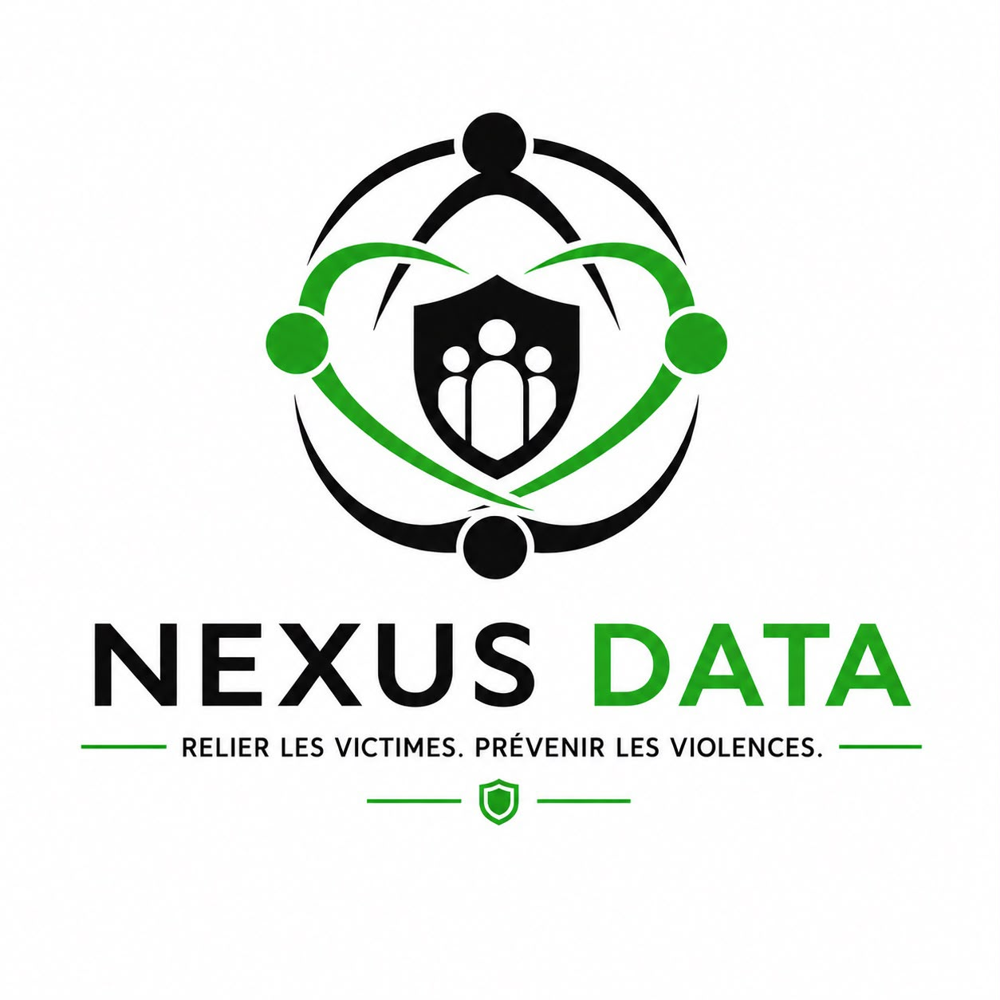

Votre parole a de la valeur. Elle est conservée en sécurité.
Nexus Data est la plateforme de recueil de témoignages et de conservation des données. Un espace sécurisé pour déposer un témoignage, enregistrer des preuves ou conserver des informations importantes — à votre rythme, selon vos conditions.

Quatre étapes, un principe : vous gardez le contrôle
Déposer
Vous déposez un témoignage quand vous vous sentez prêt·e — sans obligation d'aller plus loin.
Conserver
Preuves, documents et informations importantes sont conservés dans un espace sécurisé.
Recouper
Lorsque plusieurs témoignages concernent une même personne, Nexus peut le détecter.
Relier
Avec le consentement explicite des personnes concernées, une mise en relation entre victimes peut être proposée.
Comprendre que l'on n'est pas seul·e change tout
- Se reconnaître : découvrir que d'autres ont vécu la même chose, et que l'on n'a rien inventé.
- Trouver la force : oser entreprendre des démarches que l'on n'osait pas seul·e.
- Échanger : partager des informations utiles et concrètes.
- Se soutenir : avancer ensemble, à son rythme, et si on le souhaite, entreprendre des démarches communes.
Si vous vous en sentez capable, nous vous encourageons toujours à effectuer un signalement ou à déposer plainte auprès des autorités compétentes, afin qu'une trace officielle puisse être créée. Nexus travaille en collaboration avec les autorités — jamais à leur place.
La sécurité et le consentement avant tout
Données sécurisées
Vos témoignages et documents sont conservés dans un espace sécurisé, accessible uniquement par vous.
Consentement explicite
Aucune mise en relation, aucun partage sans votre accord clair et révocable. Vous décidez, toujours.
Données anonymisées
Les statistiques servant la sensibilisation et l'évolution des pratiques reposent sur des données anonymisées.
La plateforme arrive prochainement
Vous souhaitez être informé·e du lancement de Nexus Data ou contribuer au projet ?